explanation
System boundaries
Generated from docs/design/system-boundaries.md. Edit the canonical source, not this page.
T1 — chart: responsibilities and dependency direction
Section titled “T1 — chart: responsibilities and dependency direction”re-lab separates what is authored, what is scheduled, what is mathematically estimated, and where it executes. The separation is what makes the scalar implementation a trustworthy oracle while allowing fast backends and rich inspection.


{kind=link}
Boundary ownership
Section titled “Boundary ownership”| Boundary | Owns | Must not own |
|---|---|---|
| L0 scene | strict EDN adaptation, validation, stable primitive order, typed scene lowering | estimator policy or device resources |
| L1 graph | typed ports, selected-terminal scheduling, cache invalidation, delay transactions | sampling math or backend-specific buffers |
| L2 kernels | pure deterministic geometry, BSDF, reservoir, path, shift, and evaluation contracts | I/O, globals, UI state, wall-clock decisions |
| L3 backend | physical execution, SoA storage, native staging, FrameOutputs construction |
authored graph meaning or debug-only sampling |
| Debug/UI | projection of retained state and exact replay records | new RNG draws or hidden visibility work |
| Capture | strict job/archive schemas, atomic persistence, resume validation | reinterpretation of estimator state |
T2 — map: the frame transaction
Section titled “T2 — map: the frame transaction”(frame-transaction (inputs {:scene Scene :camera Camera :frame u32 :spp positive-int :integrator IntegratorConfig :previous {:direct TemporalHistory? :path PathTemporalHistory?}})
(graph-session (compile :selected-terminals) (read-delay-cells :previous-committed-frame) (execute :same-frame-topological-order) (commit-delay-cells :only-after-success))
(backend (render-frame :counter-rng-keyed-by [:pixel :sample :frame :bounce :stream]) (retain [:beauty :logical-pass-buffers :reservoir-soa :path-reservoir-soa :primary-gbuffer]))
(outputs {:frame FrameOutputs :terminals {terminal-name typed-value} :cook-stats {:cache-hit? bool :timing seconds :resources ...}}))The graph session transaction and renderer transaction are nested but distinct:
- The graph reads delay values committed by the preceding frame.
render.standard_framelowers logical direct and indirect pipeline descriptors to anIntegratorConfigand dispatches one backend call.- The backend constructs current-frame retained outputs. Temporal and spatial reuse only read immutable preceding-stage sources.
- Graph terminals are resolved.
- Delay writes commit together. A failed cook leaves the previous delay state intact.
T2 — map: two estimator domains
Section titled “T2 — map: two estimator domains”Direct and indirect lighting intentionally do not share a reservoir type.


{kind=link}
The direct domain has a stable propose → evaluate interface; evaluate performs
exactly one deferred shadow ray. The indirect branch has separate
trace → resample → shift → evaluate contracts because a selected sample represents
an extended path contribution, not a light point.
T3 — territory: public entry points
Section titled “T3 — territory: public entry points”Renderer contract
Section titled “Renderer contract”All backends expose the same conceptual entry point:
render_frame( scene, camera, spp, frame=0, progress=None, *, estimator=None, integrator=None, temporal_history=None, path_temporal_history=None,) -> FrameOutputsestimator is the legacy direct-only compatibility surface. New composition uses
IntegratorConfig(direct=EstimatorConfig(...), indirect=PathEstimatorConfig(...)).
Supplying both is invalid. ReSTIR modes advance as sequential one-spp history updates;
ordinary modes may render an spp batch.
Source: scalar.py,
wavefront_taichi.py, and
wavefront_slang/.
Shell boundaries
Section titled “Shell boundaries”| Shell | Input | Core call | Output |
|---|---|---|---|
| single-frame render | CLI flags or pipeline EDN | backend directly or GraphSession.cook |
PNG/EXR and optional retained state |
| capture | strict capture job | sequential frame cooks with restored histories | resumable archive |
| live UI | controls or graph session | progressive frame cooks | display textures, buffer inspector, replay views |
| playback UI | completed archive | no renderer call | archived buffers and records |
Config ownership
Section titled “Config ownership”| Type | Governs | Defined in |
|---|---|---|
EstimatorConfig |
NEE/RIS/ReSTIR direct proposal and reuse | estimator.py |
PathEstimatorConfig |
off/PT/RIS/ReSTIR GI/ReSTIR PT path behavior | path.py |
IntegratorConfig |
composition of the independent branches | path.py |
PipelineGraph |
authored logical network and terminals | pipeline.py |
CaptureSpec |
reproducible multi-frame execution and flags | restir_lab/capture/ |
Boundary invariants
Section titled “Boundary invariants”- RNG is counter-based and keyed, never a mutable stream shared between work items.
- Reuse reads immutable history or ping buffers and writes only the target pixel.
- Retained buffers are SoA, with stable scalar planes across backend boundaries.
- The scalar backend is an independent oracle; optimized backends preserve exact discrete decisions and established radiance tolerances.
- Records are the introspection substrate. Enabling observation cannot change RNG counters, candidate choice, ray counts, or radiance.
- Graph fusion is an execution choice, not a change in logical operator identity.
- Direct and path domains remain separate even when their radiance is summed.
Where to go deeper
Section titled “Where to go deeper”- Scheduling and state: render-network execution
- Sampling contracts: estimator and path reuse
- Physical execution: backend lowering
- Retention and inspection: state, replay, and capture
MIT licensed · Documentation structure follows Diátaxis · Third-party course material is linked, not redistributed.